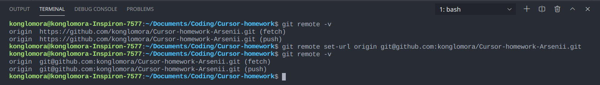

Git-шпаргалки
Base
- "git config --global user.name blabla" - задає глобальний юзернейм;
- "git config --global user.email blabal@bla" - задає глобальний емейл;
- "git init" - ініціалізує git у папці;
- "git status" - відображає статус файлів у робочому каталозі і індексі, які файли було змінено але не додано
у індекс;
- "git add" - додає вміст робочого каталогу у індекс;
- "git commit" - команда для запису індексованих змін в репозиторій;
- "git log" - відображає коміти, зроблені в репозиторії в зворотному до хронологічного порядку;
- "git checkout" - використовується для копіювання файлів з історії в робочу директорію. Також вона може
використовуватися для перемикання між гілками;
- "git branch" - команда для управління гілками в репозиторії;
- "git push" - використовується для вивантаження вмісту локального сховища в віддалений репозиторій;
- "git pull" - стягує всі зміни з віддаленого репозиторію до нашого робочого каталогу;
- "git merge" - об'єднує кілька послідовностей комітів в загальну історію. Найчастіше за допомогою команди git
merge об'єднують дві гілки;
- "git clone" - команда для вибору існуючого сховища та створення його копії;
Що таке .gitignore?
".gitignore" - це файл за допомогою якого від системи контролю версій Git можна приховувати файли і папки. Що б
лишнє не потрапляло у коміт.
Advanced
- "git revert" - відновлює коміт шляхом створення нового, зміни в якому протилежні тому коміту, який потрібно
скасувати;
- "git reset" - універсальний інструмент для скасування змін. Вона має три основні форми виклику, відповідні
аргументам командного рядка --soft, --mixed, --hard. Кожен з цих трьох аргументів відповідає трьом
внутрішнім механізмам управління станом Git: дереву комітів (HEAD), розділу проіндексованих файлів і
робочого каталогу;
- "git rebase" - з точки зору вмісту, перебазування змінює основу гілки з одного коміту на інший,
роблячись таким, ніби ми створили свою гілку з іншого коміту;
- "git cherry-pick" - використовується для перенесення окремих комітів з одного місця репорзиторію в інше;
- "git stash" - призначена для того, щоб помістити поточні зміни, які ви виконали в файлах, в окреме сховище,
і повернути файли до вихідного стану. Тобто git stash ховає зміни в файлах і зберігає ці зміни окремо, щоб
потім можна було їх повернути;
Підключення GitHub через SSH:
